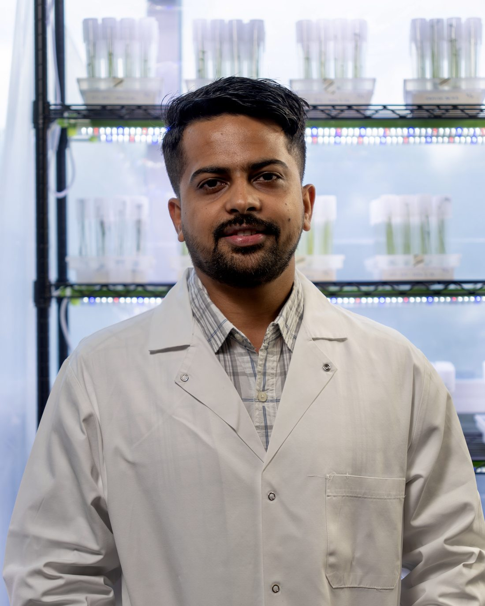
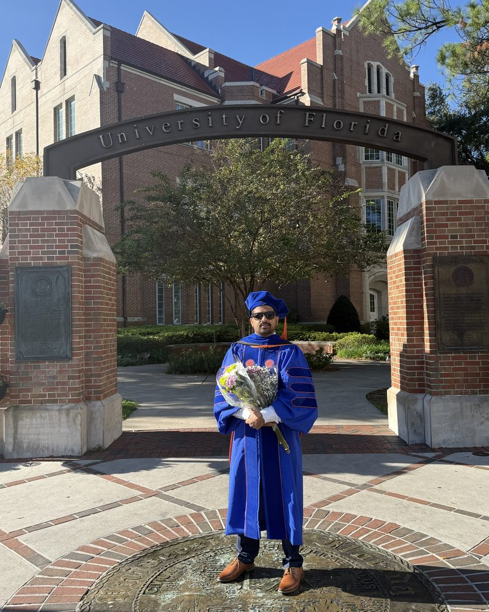
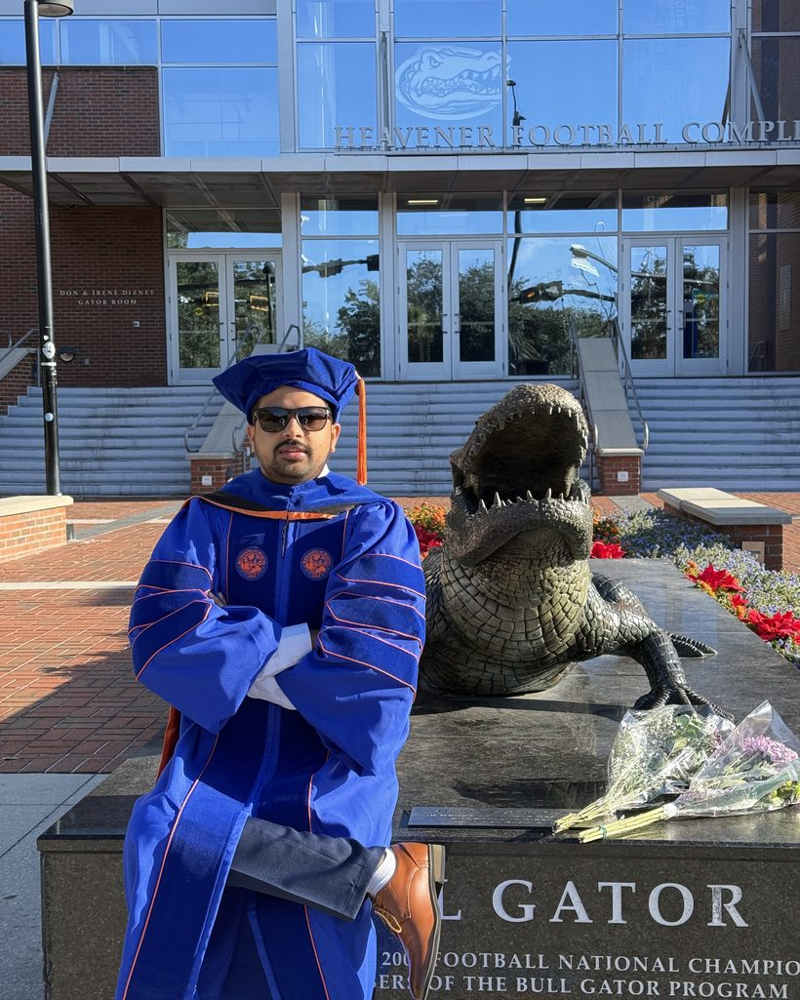

Bridging the wet lab and the command line to build more resilient crops.
I'm a plant scientist working where molecular biology meets data science. I develop transgene-free, gene-edited crops and use CRISPR, multi-omics, and machine learning to understand how plants grow, age, and defend themselves — then turn that into traits that matter in the field.

DR. UTSAB GHIMIRE · IN THE LABMost problems in crop biology don't sit neatly on one side of that line — so I try not to either.
My work lives at the intersection of molecular biology and computation. On the bench, I run CRISPR gene editing and Agrobacterium-mediated transformation to develop gene-edited plants — including work on disease-resistant citrus. At the keyboard, I integrate high-throughput sequencing, proteomics, and metabolomics, and build predictive models with machine learning.
My doctoral research, completed at the University of Florida, focused on the gene regulatory networks behind senescence and stress responses in plants — asking why crops like broccoli decline so fast after harvest, and what we can do about it. That same question — how do we keep more of what we grow? — still drives the applied, food-security framing of everything I work on.
I care about reproducible science: open code, documented pipelines, and results that hold up.
A path through academic research, federal science, and agricultural biotech.
University of Florida · Gainesville, FL
Dissertation: Identification and functional characterization of novel senescence-associated genes in broccoli.
Agriculture and Forestry University · Rampur, Nepal
From editing a single gene to modeling thousands at once — all aimed at crops that grow stronger and last longer.
Developing transgene-free, gene-edited plants through CRISPR base editing and Agrobacterium-mediated transformation — including disease-resistant citrus.
Mapping the molecular and biochemical pathways that drive crops to decline after harvest, to extend shelf life and cut food loss.
Integrating RNA-seq, single-cell, proteomics, and whole-genome sequencing into pipelines that turn raw reads into biological insight.
Building predictive models — gradient-boosted trees and neural networks — for plant traits, biomass, and the signals hidden in omics data.
Five published, peer-reviewed studies. Full list on Google Scholar.
Reproducible workflows for the analyses behind the research — all public on GitHub.
Single-cell RNA-seq pipeline for broccoli inflorescences — senescence and developmental trajectories.
QC, trimming, alignment, and HPC workflow for bulk RNA-seq from postharvest plant tissue.
ML models for cover-crop biomass and C:N ratio — CatBoost, XGBoost, and neural networks with weather features.
TMT-based proteomics pipeline: preprocessing, PCA, volcano plots, and differential testing.
Interactive notebook and Streamlit app — RNA-seq from raw data to differential expression.
Explore the full set of repositories, pipelines, and experiments.

